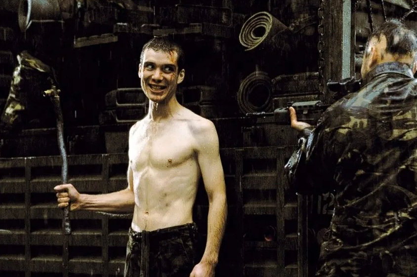

28 DAYS LATER
28 ДНЕЙ СПУСТЯ

Начну с предыстории. Впервые я этот фильм глянул году, эдак, в 2016. Это я помню точно. Предположу, что это была середина осени где-то. Смотрел я его ночью, где-то часа в 2 примерно. Было очень атмосферно. Я помню как словил от фильма дикий вайб и пошёл потом на кухню, с кофейком, что для меня не примечательно.  С сигареткой. И наверное пол часа а может и час, я разбирал и анализировал этот фильм у себя в голове. Впрочем, тогда я делал это не впервой. К 2016 я давно понял, что мне нравится смотреть кино и что мне нравится его анализировать после. Но тогда я впервые ощутил острое желание с кем-то поделиться своими мыслями. Тогда я не нашёл возможности как-то реализовать эту потребность. И теперь, когда я пишу свой обзор сюда, я нахожу довольно символичным то, что именно этот фильм у меня будет первым на моём публичном обзоре.
Откуда я узнал об этом фильме, понятия не имею, но ни раз к тому моменту я уже слышал о нём, и ни раз мне самому рекомендовали этот фильм, другие любители ужастиков. Но первую рекомендацию я получил от какой-то девки, подруга или кто она там была уже не помню, но было это за год два или три, до того как я посмотрел этот фильм. Не редко я долго откладываю просмотр фильмов, порой и годами, так что не знаю как у вас, а у меня это нормальное явление.
Говоря сразу об оценке фильма, я бы поставил ему 8/10 примерно, если смотреть чисто технически и по своим ощущениям. И настоятельно рекомендую его посмотреть всем, т.к. это must watch в жанре ужасов. Если вы фанат данного жанра, или считаете себя многогранным киноманом, то этот для вас обязателен т.к. он не просто хорош, это уже культовый, легендарный фильм ужасов. Если же вы слишком впечатлительны и не любите ужастики вот совсем, тогда лучше стоит пройти мимо, а я преступлю к разбору фильма.
Что можно сказать о фильме, в чисто техническом плане. Да, он не дорогой. Да он снят уже 23 года назад, однако атмосфера в фильме присутствует и она не теряет своей силы и сегодня. Каждый нормальный фильм ужасов должен быть страшным. И этот фильм действительно напугает вас даже в 2025 и я думаю своей хоррор составляющей фильм не лишится и через десятилетия, именно из-за того, каким образом он был снят. При этом, данный фильм ещё и является триллером и у него это хорошо получается, чувство сапиенса, нагнетания, тревоги в нём присутствует. И как я уже сказал в начале, у фильма действительно потрясающая атмосфера, подробнее я расскажу ниже о том, как она технически создавалась. А так же есть у фильма какой-то особый шарм, особый вайб, который ты чувствуешь и который тянет тебя возвращаться к нему снова и снова, хотя бы изредка. Даже полное знание сюжета, не мешает погружению в фильм и не лишает вас удовольствия при повтором просмотре. Сам я я смотрел этот фильм раза 2-3 . В последний раз пересмотрев недавно и я бы с удовольствием глянул его ещё несколько раз в будущем.
Теперь я хочу обсудить феномен данного произведения, чем оно примечательно, как создаёт свою привлекательность, почему оно сохраняет свою актуальность в 2025 году, чем вдохновлялись авторы и какое поп-культурное наследие оно оставило.
История Майкла Корлеоне становится всё более мрачной и отчуждённой. Фильм мастерски играет с хронологией, показывая молодость Вито и падение Майкла в параллельных линиях. Роберт Де Ниро, молодой, безупречный, выиграл Оскар. А Аль Пачино здесь — абсолютно на пике своей силы.
Саундтрек Нино Рота, тягучая атмосфера, внимание к деталям и гениальный монтаж делают этот фильм одним из лучших продолжений в истории. Его не просто смотрят — его переживают.
Почему стоит посмотреть:
- Глубокая драма и психологизм
- Двойная структура сюжета
- Выдающие актёрские работы
- Исторический масштаб и интимность